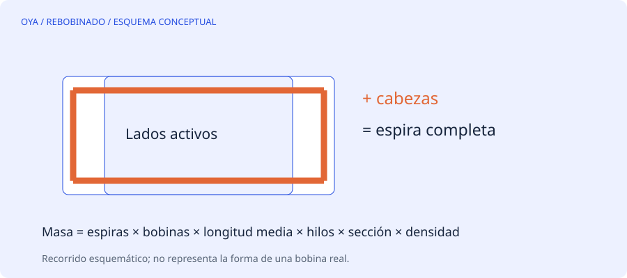

El diámetro no basta para conocer el peso
Para estimar el cobre de un devanado hay que conocer la longitud total de conductor y la sección de cada hilo. La masa es proporcional a ambas. La densidad aproximada usada aquí es 8960 kg/m³, equivalente a 0,00896 kg por metro y por mm² de sección.
La longitud media de espira incluye sus dos lados activos y las dos cabezas. Medir solo la longitud axial del paquete de chapas deja fuera una parte importante del recorrido. Tampoco debe tomarse una única bobina pequeña como representativa de todos los grupos de un devanado concéntrico.
Ejemplo de cálculo completo
Supongamos 24 bobinas de 60 espiras, una longitud media de espira de 0,45 m y dos hilos en mano de 0,70 mm de diámetro desnudo. La longitud total física de alambre es 24·60·0,45·2 = 1296 m.
La sección de cada hilo es π·0,70²/4 ≈ 0,38485 mm². La masa neta de cobre es 1296·0,38485·0,00896 ≈ 4,47 kg. Con un margen de compra del 10 %, el resultado es aproximadamente 4,92 kg.
| Concepto | Qué incluye |
|---|---|
| Longitud por recorrido | Espiras × bobinas × longitud media |
| Longitud total de alambre | Todos los hilos del conductor |
| Masa neta | Solo cobre del cálculo |
| Margen de compra | Porcentaje adicional elegido |
Evitar contar dos veces los hilos
Hay dos métodos equivalentes: multiplicar la longitud por el número de hilos y usar la sección de un hilo, o mantener la longitud del recorrido y usar la sección total del grupo. Multiplicar simultáneamente longitud y sección por los hilos duplica su efecto.
El formulario de esta web sigue el primer método. La longitud de salida cuenta todos los hilos y la masa utiliza el área individual. La longitud media se introduce en milímetros y se convierte internamente a metros.
El margen no corrige datos malos
Añadir un 10 % puede cubrir una previsión de recortes elegida para el trabajo, pero no compensa una longitud media mal medida ni un número de bobinas equivocado. Tampoco representa una norma universal. El margen depende del proceso, las muestras, los empalmes y la forma de suministro.
El resultado excluye masa del esmalte, barniz, aislamiento de ranura y terminales. El peso de una bobina comercial de alambre esmaltado puede incluir componentes que este modelo no representa. Para un presupuesto económico hacen falta además precio real del proveedor, desperdicio previsto, mano de obra, pruebas y otros materiales.
Cómo mejorar la estimación
Antes de deshacer una muestra útil, registra las dimensiones de varias bobinas y cuántas veces se repite cada tamaño. En un diseño con diferentes longitudes, calcula cada familia por separado y suma sus masas. Guarda unidades explícitas: confundir 450 mm con 450 m cambia el resultado mil veces y un formulario no puede reconocer siempre esa intención.
Fuentes y alcance
Referencia de consulta: EASA/AEMT: documentación y dimensiones del devanado. Los ejemplos numéricos son educativos y no describen un trabajo realizado.